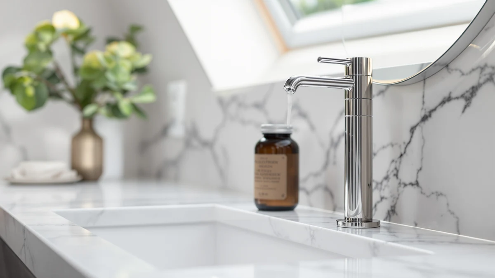

Best Soap Dispensers for Kitchen Sink of 2026: 7 Top Picks
Prices and picks verified as of August 2026. Independent, reader-supported reviews.


Quick Answer
After comparing 7 soap dispensers for the kitchen sink, we landed on the GAGALIFE Built in Sink Soap dispenser ($16.99) for most people. It mounts in the sink deck, refills from the top, and keeps your counter clear. Want a hands-free option while you cook? The PZOTRUF touchless dispenser ($18.37) reads your hand and pumps without contact.
Our pick: GAGALIFE Built in Sink Soap — $16.99 Check Price on Amazon
Bottom line: our top pick is the GAGALIFE Built in Sink Soap Dispenser or Lotion Dispenser for at $15.99. The best budget option is the Small Soap Dispenser for Bathroom and Kitchen at $6.99.
Things to Know Before You Buy
- Mounting style matters most. A built-in dispenser drops into a hole in your sink deck and frees the counter, while a countertop bottle needs no installation and moves anywhere.
- Touchless costs more but stays cleaner. Sensor pumps like the PZOTRUF and OHIFAST run on batteries and avoid soapy fingerprints, which helps when you handle raw food.
- Capacity affects refill frequency. The 18 oz JASAI glass bottles go longer between top-offs than compact pumps, so a busy kitchen sink benefits from a larger reservoir.
- Material is a look-and-feel choice. ABS plastic survives drops near a steel sink, while glass reads more upscale and shows the soap level at a glance.
- Thick dish soap needs thinning. Any pump, manual or automatic, draws better when you cut a heavy soap with a splash of water.
A good kitchen sink dispenser fixes a daily annoyance: the sticky soap bottle that tips over and dribbles down its own label while hogging the one patch of counter you need for prep. You want one that stays put, refills without a fight, and gives you a clean dose even when your hands are wet or greasy.
We pulled together 7 dispensers that fit a kitchen sink, from a deck-mounted built-in pump to touchless automatics and refillable glass bottles. Our top pick is the GAGALIFE Built in Sink Soap dispenser at $16.99. It installs through the sink deck so nothing sits on the counter, and you top it off from above instead of unscrewing a base under the cabinet.
If you would rather not touch a pump while handling chicken or scrubbing pans, the PZOTRUF touchless dispenser ($18.37) and the budget OHIFAST automatic ($16.99) both dispense by sensor. Prefer the look of glass? The two JASAI 18 oz bottles ($8.99 and $9.49) refill easily and show the level so you never get caught empty. Below we break down each pick, who it suits, and where it falls short.
Why You Should Trust Us
We cover soap dispensers full time, and picking the right one for a kitchen sink means looking past the product photos. For this guide we compared specs, materials, pump mechanisms, capacity, and owner feedback across 7 models that people actually buy for the sink area, then weighed each against the others on the things that matter at a busy counter.
We have no stake in which brand you pick. Our recommendations lean on published dimensions, build materials, pricing, and aggregate owner ratings rather than marketing claims. When a dispenser has a real weakness, like a flimsy pump head or a sensor that needs careful soap, you will read about it here instead of finding out after it arrives.
How We Picked
To narrow the field, we started with the three mounting styles people choose at the sink: built-in deck pumps, touchless automatics, and countertop bottles. We wanted at least one strong option in each so this guide works whether you own your home, rent, or just want a hands-free pump.
We then filtered for price under $20, since a sink dispenser should not cost more than a decent bottle of dish soap over its life. We favored refillable designs over throwaway pumps, checked that capacities made sense for daily kitchen use, and read through owner ratings to flag pumps that leak, clog, or quit early. The 7 picks here each earned a roughly 4 out of 5 owner rating and held up across those checks.
We also balanced looks against durability. ABS plastic shrugs off knocks against a steel basin, so it anchors our pricier picks, while glass earns a place for anyone who wants a cleaner counter aesthetic and does not mind a bit more care.
How We Compared
We sized up each dispenser the way you would actually live with it. We looked at how the pump primes and dispenses, how easily it refills, and how stable the base feels when you press it one-handed with a wet palm. For the touchless models, we weighed sensor placement and battery type against the convenience of never touching a pump mid-cook.
We compared capacity against counter footprint, since an 18 oz bottle that hogs the ledge is a different trade-off than a compact 2.7-inch-wide pump. We cross-checked our impressions against owner ratings to catch problems that only show up after weeks of use, like a sensor that misfires or a metal pump that corrodes. The notes in each pick below reflect those comparisons rather than a lab score.
Our Picks

GAGALIFE Built in Sink Soap
What we like
- Mounts in the sink deck, so nothing sits on the counter
- Refills from the top without reaching under the cabinet
- Long spout clears the basin and ABS body resists soap residue
Flaws but not dealbreakers
- Needs a mounting hole in the deck or counter to install
- Plastic pump head feels less premium than a metal one
| Material | ABS plastic |
| Size | 8"x5"x3" |
The GAGALIFE is our overall pick because it gets the bottle off your counter entirely. It installs through an existing hole in the sink deck or a drilled hole in the counter, leaving only a slim pump and spout above the surface. That matters at a sink, where every inch of dry ledge competes with drying racks, sponges, and prep space. The ABS plastic body measures about 8 by 5 by 3 inches under the deck and shrugs off the knocks and splashes that come with a stainless basin.
The feature that wins us over is top-side refilling. Instead of unscrewing a reservoir trapped under the cabinet, you pour soap straight down the spout opening, which turns a two-minute chore into a five-second one. At $16.99 it sits in the middle of this group on price, and the trade-offs are honest: you need a hole to mount it, and the pump head is plastic rather than brushed metal, so it looks utilitarian up close. For a workhorse sink pump you press a dozen times a day, those are easy compromises.

Kitchen Soap Dispenser Set with
What we like
- Comes with a matching sponge caddy for a tidy sink area
- No installation, so it works in a rental
- Lowest price among our non-glass picks at $13.98
Flaws but not dealbreakers
- Takes up more counter space than a built-in pump
- ABS plastic looks less refined than glass or metal
| Material | ABS plastic |
| Size | — |
The Eavida set is our runner-up for the kitchen sink because it solves two counter problems at once. You get a pump bottle for dish soap plus a coordinated caddy that holds a sponge or scrubber, so the wet, messy parts of your sink routine live together in one matching unit. For anyone who hates the random-bottle-and-stray-sponge look, that coordination is the whole appeal, and at $13.98 it is the cheapest non-glass option in this guide.
It sits on the counter rather than mounting in the deck, which keeps installation at zero but does claim a patch of ledge next to the faucet. The ABS plastic construction handles daily kitchen abuse well, though it reads more practical than upscale next to a steel sink. If you rent, or you simply do not want to drill a hole, this set gives you most of what the GAGALIFE offers without the commitment. We rank it right behind our top pick mainly on counter footprint and finish.

PZOTRUF Automatic Soap Dispenser Touchless
What we like
- Infrared sensor dispenses with no contact, keeping the pump clean
- Frees you from a soapy pump while cooking with raw meat
- Compact ABS body fits beside most kitchen faucets
Flaws but not dealbreakers
- Runs on batteries you will eventually replace
- Thick dish soap needs thinning to draw smoothly
| Material | ABS plastic |
| Size | — |
The PZOTRUF is our hands-free pick for the kitchen sink, and it earns that spot the moment you are elbow-deep in raw chicken and need soap without smearing the pump. An infrared sensor reads your hand under the spout and dispenses a measured dose, so the only thing that touches the dispenser is the soap itself. For a sink where you constantly switch between handling food and washing up, that contactless flow is the practical hygiene win that a manual pump cannot match.
At $18.37 it is the priciest pick here, and the cost buys electronics rather than a fancier finish. The body is the same ABS plastic as our top picks, sized to tuck beside a standard faucet. The honest catches are familiar to any automatic dispenser: it needs batteries, and a thick dish soap can pump sluggishly until you cut it with a little water. Get past those and you have a touchless pump that genuinely helps at the messiest corner of the kitchen.

OHIFAST Automatic Liquid Soap Dispenser
What we like
- Touchless dispensing at a lower price than most sensor pumps
- Simple setup, no mounting or wiring
- Good entry point if you have never owned an automatic
Flaws but not dealbreakers
- Plastic build feels basic next to glass picks
- Battery powered, so you replace cells over time
| Material | ABS plastic |
| Size | — |
The OHIFAST is our budget choice for a touchless soap dispenser at the kitchen sink. It does the same core trick as the PZOTRUF (wave your hand, soap comes out) for less money, so it is the easiest way to try hands-free dispensing without overthinking the purchase. If you have never owned an automatic and are not sure the gimmick will stick, this is the low-risk way to find out at $16.99.
You give up a little to hit that price. The ABS plastic body is functional rather than handsome, and like every sensor model it runs on batteries you will swap out down the road. The dispensing is reliable for everyday dish soap, though a thick formula benefits from a splash of water so the pump keeps up. As a first automatic for the sink, or a spare for a second basin, it covers the basics without asking much of your budget.

JASAI 18 Oz Clear Glass
What we like
- 18 oz capacity means fewer refills in a busy kitchen
- Clear glass shows the soap level so you top off before empty
- Lowest price in the guide at $8.99
Flaws but not dealbreakers
- Glass can chip if it tips against a steel sink
- Sits on the counter and takes up ledge space
| Material | ABS plastic |
| Size | 1 Pack |
The JASAI 18 oz clear glass dispenser is our value pick for a kitchen sink, and at $8.99 it is the cheapest option in this roundup. The clear glass does two useful things: it shows exactly how much soap is left, so you refill before a guest pumps air, and it brings a cleaner, less plastic look to the counter. The 18 oz body holds enough that a high-traffic kitchen sink goes noticeably longer between refills than it would with a compact pump.
Glass at a sink asks for a bit of caution. A hard knock against the stainless basin can chip the bottle, so this suits a counter spot with a little clearance rather than a cramped ledge right at the faucet. It also sits on top rather than mounting in the deck, claiming some space the GAGALIFE would save. For the price, though, it is an easy refillable upgrade over the bottle your dish soap came in.

JASAI 18Oz Simple Glass Soap
What we like
- 18 oz glass body with an understated, modern look
- Metal pump head adds a touch of polish
- Refillable and affordable at $9.49
Flaws but not dealbreakers
- Glass is less forgiving than plastic near a hard sink
- Countertop footprint, no deck mounting
| Material | ABS plastic |
| Size | 1 Pack |
The JASAI simple glass dispenser is the design-forward sibling to our value pick, built for a kitchen sink where you care how the counter looks. It pairs the same 18 oz glass body with a metal pump head, giving you a cleaner, more deliberate piece than the plastic options without climbing in price. At $9.49 it stays firmly in budget territory while reading more like a deliberate choice than a hand-me-down soap bottle.
The trade-offs mirror the other glass pick. The glass looks great but is less forgiving than ABS if it meets the edge of a steel basin, so give it a stable spot. It sits on the counter rather than mounting in the deck, which costs you a little ledge space compared with our built-in top pick. If your priority is a tidy, grown-up sink area and you do not mind handling glass, this is the most attractive pump in the group for the money.

Small Soap Dispenser for Bathroom
What we like
- Slim 2.7 by 6.8 inch footprint fits crowded ledges
- Cheapest pick in the guide at $6.99
- Doubles for a small bathroom sink if needed
Flaws but not dealbreakers
- Smaller reservoir means more frequent refills
- Basic styling, not a statement piece
| Material | ABS plastic |
| Size | 2.7x6.8 inches |
The YAUKPH is the space-saver of this kitchen sink lineup, measuring only 2.7 by 6.8 inches. When the only open spot near your faucet is a sliver of ledge, a full-size 18 oz bottle simply will not fit, and this slim pump slides into the gap. At $6.99 it is the least expensive pick here, which makes it an easy add for a galley kitchen, an RV sink, or a small apartment counter where every inch counts.
The compromise is capacity. A smaller body holds less soap, so you refill it more often than the roomy JASAI bottles, and the plain styling is more about fitting in than standing out. It also crosses over neatly to a cramped bathroom sink if your needs change. For a tight kitchen sink on a tight budget, it covers the job without crowding the counter.
Quick Comparison
| Product | Material | Price | Rating | Best for | Get it |
|---|---|---|---|---|---|
| GAGALIFE Built in Sink Soap | ABS plastic | $16.99 | 4 | A clear counter and built-in mounting | View on Amazon → |
| Kitchen Soap Dispenser Set with | ABS plastic | $13.98 | 4 | A matching pump-and-sponge set, no drilling | View on Amazon → |
| PZOTRUF Automatic Soap Dispenser Touchless | ABS plastic | $18.37 | 4 | Hands-free dispensing while cooking | View on Amazon → |
| OHIFAST Automatic Liquid Soap Dispenser | ABS plastic | $16.99 | 4 | Touchless convenience on a budget | View on Amazon → |
| JASAI 18 Oz Clear Glass | ABS plastic | $8.99 | 4 | A large refillable bottle at the lowest price | View on Amazon → |
| JASAI 18Oz Simple Glass Soap | ABS plastic | $9.49 | 4 | A minimal glass pump with a metal head | View on Amazon → |
| Small Soap Dispenser for Bathroom | ABS plastic | $6.99 | 4 | Tight ledges and small sinks | View on Amazon → |
What is the best soap dispenser for a kitchen sink?
For most kitchens we recommend the GAGALIFE Built in Sink Soap dispenser at $16.99.
Are built-in or countertop soap dispensers better for a kitchen sink?
A built-in dispenser like the GAGALIFE sits flush in the sink deck and frees up counter space, but it needs a mounting hole.
The Competition
Every dispenser here made our shortlist, so the picks we ranked lower still earn a place, just for narrower needs.
The Eavida set ($13.98) lands right behind our top pick because it sits on the counter instead of mounting in the deck. If you have the ledge to spare and want the matching sponge caddy, it is an easy buy, but the GAGALIFE keeps the surface clearer.
The OHIFAST automatic ($16.99) trails the PZOTRUF on finish and refinement. Both dispense touchlessly, yet the PZOTRUF feels a step more polished for the small price gap. We send budget shoppers to the OHIFAST and everyone else to the PZOTRUF.
Among the countertop bottles, the compact YAUKPH ($6.99) only makes sense when space is especially tight, since its smaller reservoir means more refills. If your counter can fit a larger bottle, the 18 oz JASAI glass pumps hold more soap for nearly the same money.
The verdict: for the best soap dispenser for kitchen sink use, the GAGALIFE Built in Sink Soap dispenser ($16.99) is the pick for most people, thanks to its deck mounting and top-side refilling. Choose the PZOTRUF if you want touchless dispensing while you cook, or one of the JASAI glass bottles if you prefer a refillable look on the counter.
Frequently Asked Questions
What is the best soap dispenser for a kitchen sink?
For most kitchens we recommend the GAGALIFE Built in Sink Soap dispenser at $16.99. It mounts through the sink deck or counter, refills from the top, and keeps the counter clear. If you want hands-free dispensing while you cook, the PZOTRUF touchless dispenser at $18.37 is the better choice.
Are built-in or countertop soap dispensers better for a kitchen sink?
A built-in dispenser like the GAGALIFE sits flush in the sink deck and frees up counter space, but it needs a mounting hole. A countertop bottle such as the JASAI glass pumps needs no installation and moves anywhere, though it takes up room next to the faucet. Pick built-in if your sink already has an extra hole, and countertop if you rent or want flexibility.
Can you put dish soap in a touchless soap dispenser?
Yes. The PZOTRUF and OHIFAST automatic dispensers handle standard liquid dish soap. If your dish soap is thick, thin it with a little water so the pump draws it smoothly. Avoid heavy gels or anything with grit, which can clog the nozzle on any sensor pump.
How much should a good kitchen sink soap dispenser cost?
Every pick in this guide costs under $20. The compact YAUKPH starts at $6.99, the JASAI glass bottles run $8.99 to $9.49, and the automatics top out at $18.37. You do not need to spend more than $20 to get a durable, refillable dispenser for the kitchen sink.